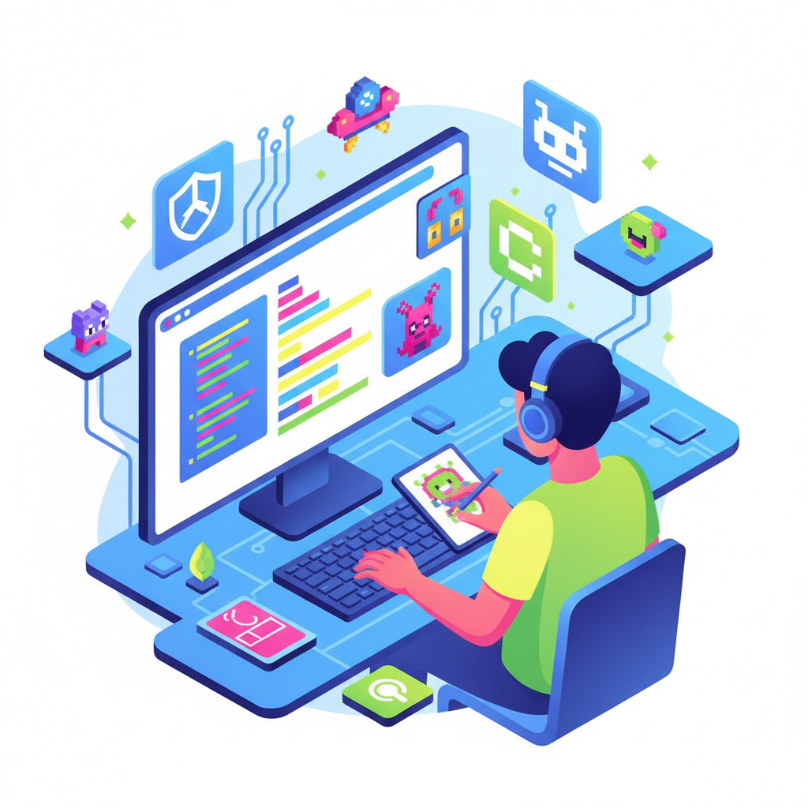
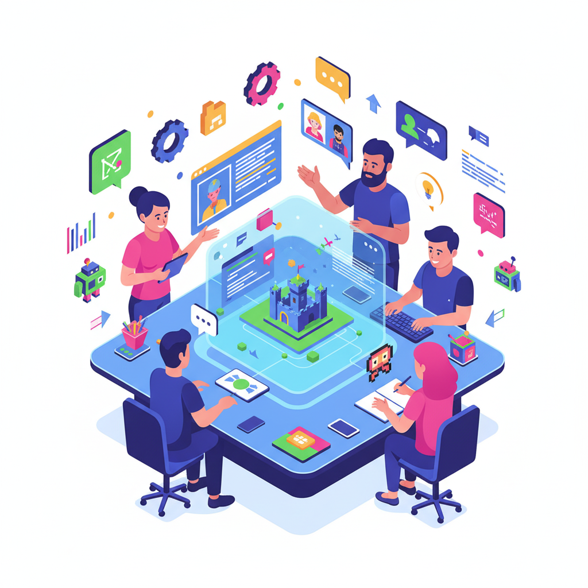

Nossos Projetos
Na Código & Controle, acreditamos que aprender pode ser divertido, criativo e transformador. Nossos projetos unem educação, tecnologia e cultura gamer para mostrar que o mundo dos jogos vai muito além do entretenimento — é também um espaço de inovação, aprendizado e oportunidade. Cada iniciativa foi pensada para estimular o desenvolvimento de novas habilidades, promover a troca de experiências e fortalecer a comunidade dev gamer brasileira. Do primeiro “Hello World” até o lançamento do seu próprio jogo, a gente quer estar junto em cada fase dessa jornada.
Do Zero ao Jogo
Um programa de formação para quem quer aprender a criar jogos do zero. Aqui, ensinamos lógica de programação, design, som e narrativa, usando ferramentas acessíveis como Unity, Godot e Construct. O foco é mostrar que qualquer pessoa pode desenvolver um jogo, mesmo começando sem experiência.
Saiba maisLaboratório de Ideias
Espaço colaborativo (presencial e online) para devs e artistas se unirem em pequenos times e desenvolverem protótipos, mods ou jogos completos. O objetivo é estimular a criatividade e o trabalho em equipe, com suporte de mentores da comunidade.
Saiba maisConectAção

Projeto de inclusão digital que leva oficinas de programação e design de jogos para escolas públicas e comunidades.
Queremos mostrar que a tecnologia pode mudar vidas e que o desenvolvimento de jogos também é uma forma de arte, expressão e futuro profissional.